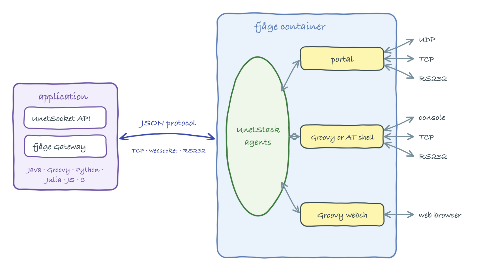

9 UnetSockets and gateways
In Section 2.5.1, we saw how external applications can connect to UnetStack using the UnetSocket API. In this chapter, we go through the API in more detail.
9.1 One node, many doors
Before diving in, it is worth seeing how all the ways of interfacing with UnetStack relate to one another. A UnetStack node is a fjåge container hosting the agents that make up the stack (Chapter 13). Every interface — this chapter’s sockets, the shells you have been typing into, the portals of Chapter 10 — is ultimately just a different door into that same container of agents (Figure 9.1):

UnetSocket on a fjåge Gateway speaking the JSON protocol, while shells and portals are agents inside the container serving connections from outside.
- UnetSocket API — an external program opens a
UnetSocket, which rides on a fjågeGateway. The gateway speaks fjåge’s JSON protocol to the container over TCP (the API port, 1100 by default), a websocket, or a serial port, and makes the application look like just another agent to those inside: it can exchange messages, look up services, and get or set parameters. The API is implemented in many languages (Java/Groovy, Python, Julia, JavaScript, C), all speaking the same JSON protocol underneath. - Shells — a shell agent runs inside the container and executes commands on behalf of whoever is connected to it — over the console, TCP, a websocket or a serial port. The language depends on the shell’s script engine: Groovy for the interactive shells used throughout this handbook (Chapter 30), or AT commands for legacy integrations (Chapter 12). The browser-based web interface is a shell served over a websocket (
websh). - Portals — portal agents (Chapter 10) pipe raw data between a UDP/TCP port or serial device and Unet datagrams, so an unmodified application can communicate over a Unet without knowing UnetStack exists.
The UnetSocket API is one of several ways to interface an application with UnetStack, and usually the best one: it gives full programmatic access to datagrams, parameters, messages and agents. When you cannot (or would rather not) modify the application, portals pipe data between the network and a UDP port, TCP port or serial device with no coding at all; and for legacy systems that already speak a modem command language, the AT script engine exposes the stack through text commands. Prefer a UnetSocket for new applications, and reach for portals or AT commands when integrating existing ones.
9.2 UnetSockets
The UnetSocket API is modeled on datagram sockets APIs available on many platforms. The API is designed to be language agnostic, and has implementations in many languages (Java/Groovy, Python, Julia, JavaScript, C, etc). While our code examples in this chapter are in Groovy (Section 2.5.1 shows a Python example), the underlying concepts that we will illustrate apply to all languages. The API looks very similar in most languages, and the individual implementations have more documentation for that language.
The basic steps to send/receive data with a UnetSocket are:
- Open the socket.
- Set socket attributes (optional).
- Send / receive data using the socket.
- Close the socket.
If we have multiple datagrams to send / receive, we can hold the socket open until all datagrams are sent / received, and only close the socket once everything is done.
9.2.1 Opening a socket
In order to open a socket, we usually specify the IP address of the UnetStack node and an API port number. The default port number for UnetStack-compatible modems is 1100. When setting up multiple simulated modems on a single computer, each modem requires a unique port number, and so it is common to use 1101, 1102, etc.
Once we have the IP address and port, we open the socket by constructing a UnetSocket:
import org.arl.unet.api.UnetSocket
def sock = new UnetSocket('localhost', 1101)When running on the UnetStack shell itself (as in Section 2.5.1), we instead pass the script object this, which connects the socket to the local container:
def sock = new UnetSocket(this)A socket can also be opened over a serial (RS232) connection by specifying the device name, baud rate and settings string (e.g. new UnetSocket('/dev/ttyUSB0', 115200, 'N81')).
Not sure what to connect to? Type iface on the node’s shell — it lists the node’s live connectors, including the TCP API port (tcp://...), the websocket API (ws://...), and any shell interfaces (Chapter 30). The entry marked [API] is what a UnetSocket connects to.
9.2.2 Socket attributes
A freshly opened socket can be used to send and receive datagrams straight away, but several attributes let us control how it behaves. The two most commonly used are the protocol number and the destination address.
9.2.2.1 Protocol numbers
Every datagram carries a protocol number that lets applications distinguish their own traffic from other traffic flowing through the stack. Protocol number Protocol.DATA (0) is the default for general-purpose data. Protocol numbers 1 to 31 are reserved for internal use by the stack (ranging, link, routing, etc.) and cannot be used by applications. Application protocols use numbers from Protocol.USER (32) up to Protocol.MAX (63).
To receive only datagrams with a particular protocol number, we bind the socket to that protocol:
sock.bind(Protocol.USER) // listen only for protocol 32 datagrams
println sock.isBound() // true
println sock.getLocalProtocol() // 32
sock.unbind() // listen for all unreserved protocols againAn unbound socket (the default) receives datagrams of all unreserved protocols (Protocol.DATA and Protocol.USER to Protocol.MAX), as well as broadcast datagrams. bind() returns false if the requested protocol number is a reserved one.
To set a default destination address and protocol number for sending, we connect the socket:
def addr = sock.host('B') // resolve node name 'B' to its address
sock.connect(addr, Protocol.USER)
println sock.isConnected() // trueAfter connect(), a plain send(data) will go to this default destination using this default protocol. Calling disconnect() clears the default destination (and resets the protocol to Protocol.DATA). The host() method resolves a node name to its address using the address resolution service (Chapter 15), and getLocalAddress() returns the address of the local node.
9.2.2.2 Timeout
The receive() call blocks indefinitely by default. We can change this with setTimeout(), which takes a timeout in milliseconds:
sock.setTimeout(5000) // receive() waits at most 5 seconds
sock.setTimeout(UnetSocket.NON_BLOCKING) // 0: return immediately if no data
sock.setTimeout(UnetSocket.BLOCKING) // -1: block forever (the default)9.2.2.3 Send mode and QoS attributes
The send mode controls how long a send() call blocks:
UnetSocket.NON_BLOCKING(0) — request transmission and return immediately, without waiting for acceptance or transmission.UnetSocket.SEMI_BLOCKING(-2, the default) — wait until the datagram is accepted for transmission, but (for unreliable datagrams) do not wait for the actual transmission.UnetSocket.BLOCKING(-1) — wait until the datagram is transmitted; for a reliable socket, wait until delivery is acknowledged (or fails).
sock.setSendMode(UnetSocket.BLOCKING)Datagrams sent through the socket also carry quality-of-service attributes that mirror those on a DatagramReq (see Chapter 8). These are set as socket attributes and apply to subsequent send() calls:
sock.setReliability(true) // request acknowledged end-to-end delivery
sock.setPriority(Priority.HIGH) // Priority.URGENT/HIGH/NORMAL/LOW/IDLE
sock.setRobustness(Robustness.ROBUST) // more robust (slower) coding
sock.setTtl(60) // time-to-live in secondsIn Groovy, the getter/setter pairs can also be used as properties, e.g. sock.reliability = true and sock.priority = Priority.HIGH, as illustrated in Section 2.5.1.
9.2.3 Sending datagrams
The send() method transmits a datagram. There are three forms:
sock.send(data) // to the connected default destination/protocol
sock.send(data, to) // to address 'to', using the default protocol
sock.send(data, to, protocol) // to address 'to', using the given protocolwhere data is a byte array. For example, to send the bytes of a string to node B:
def addr = sock.host('B')
sock.send('hello!'.bytes, addr, Protocol.USER)send() returns true if the datagram was accepted (and, depending on the send mode and reliability, transmitted or delivered), or false on failure. The first form requires the socket to have been connected first; it returns false otherwise.
Which agent actually carries the datagram is chosen automatically: the socket picks the highest-level DATAGRAM provider available (remote/transport, then routing, then link, then physical), so an application normally does not need to care whether the data goes single-hop or multi-hop.
The destination, protocol, reliability, priority, robustness and TTL all map onto the underlying DatagramReq described in Chapter 16. When reliability is requested, the socket waits (in BLOCKING/SEMI_BLOCKING mode) for a DatagramDeliveryNtf before returning true.
9.2.4 Receiving datagrams
The receive() method returns the next incoming datagram as a DatagramNtf, or null if the socket timeout is reached (or the call is cancelled) before any datagram arrives:
sock.bind(Protocol.USER) // optional: only receive protocol 32 datagrams
sock.setTimeout(10000) // wait at most 10 seconds
def rx = sock.receive()
if (rx != null) {
println rx.from // sender's node address
println rx.to // recipient address (our address, or broadcast)
println rx.protocol // protocol number
println new String(rx.data) // convert the received bytes to a string
}This shows:
232
31
32
hello!If the socket is bound to a protocol (via bind()), only datagrams with that protocol number are returned; otherwise all unreserved-protocol and broadcast datagrams are returned. The received data is a byte array (rx.data), which we convert as needed — for example with new String(rx.data) for text, as shown in Section 2.5.1.
A blocking receive() running in another thread can be interrupted by calling sock.cancel(), which causes the pending receive() to return null.
9.2.5 Closing the socket
When we are done with the socket, we close it:
sock.close()
println sock.isClosed() // trueClosing the socket releases the underlying network connection (the fjåge gateway and its TCP/serial connection) to the modem. This matters: a modem accepts only a limited number of simultaneous connections, so a socket left open ties up a connection until it is reclaimed. Always close sockets when finished — for example in a finally block, or by relying on UnetSocket implementing Closeable (so a Java try-with-resources block closes it automatically). After close(), the socket can no longer be used.
9.3 Gateways
The UnetSocket API is intended for sending and receiving datagrams. Under the hood, it is built on a fjåge Gateway that connects the application to the agents running on the Unet node. The gateway gives us lower-level access to the stack: we can exchange arbitrary messages with agents, look up agents by the service they provide, and get or set agent parameters. This is the same agent/service/message framework described in Chapter 13 and used throughout Part III.
We obtain the gateway from an open socket with getGateway(), and look up agents with agentForService(), agentsForService() or agent():
def gw = sock.gateway // the underlying fjåge Gateway
def phy = sock.agentForService(Services.PHYSICAL) // find the physical-layer agentWith an agent reference, we can read and write its parameters (Chapter 13), and send and receive arbitrary messages. For example, to read the physical-layer MTU and change a parameter, then transmit a frame and wait for a notification:
println phy.MTU // get a parameter (prints: 16)
phy[Physical.DATA].frameLength = 32 // set an indexed parameter
gw.subscribe(phy) // subscribe to the agent's notifications
def ntf = gw.receive(10000) // receive any message, waiting up to 10 sLooking up agents and accessing their parameters and messages this way lets an application do anything the shell can do — tune the physical layer (Chapter 17), query node information (Chapter 14), drive ranging (Chapter 25), and so on. The relevant messages and parameters for each service are documented in the corresponding service chapter in Part III.
In languages other than Java/Groovy (e.g. Python with unetpy), services and parameters are referenced as strings (e.g. 'org.arl.unet.Services.PHYSICAL'), and reserved-word fields such as from are accessed as from_. Messages are represented by classes generated from the same message definitions, so their names and fields match what you see in this handbook. The gateway concepts are otherwise identical. See the language-specific API documentation for details.